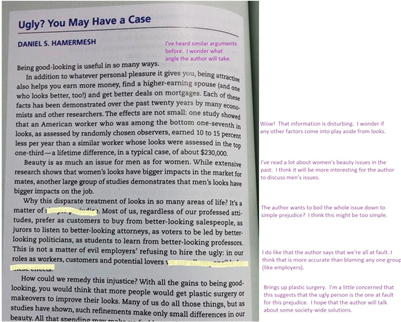

•Once you have
found the information that is important
to you, you will be ready to respond to the reading.

Hammermesh,
Daniel.“Ugly?You May Have a Case.”Everything’s an Argument.6th Ed.Ed. Andrea Lunsford and John
Ruszkiewicz.Boston:Bedford St. Martin’s, 2013.304-306.Print.